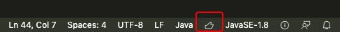
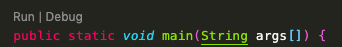
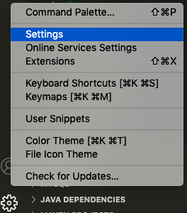
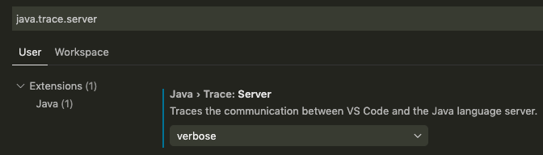

vscode java language server初始化失败
vscode中的java插件 Language Support for Java by RedHat 正常初始化之后,vscode右下角是这样的  
是一个大拇指的状态,这时main方法和TestCase方法上都会出现 Run|Debug 快捷链接,可以方便的进行测试
terminal中会输出如下类似信息
9b7c9ae3 Synchronizing projects [Done]
30bb500f Building [Done]
25a21665 Building [Done]
182dd5d5 Refreshing workspace [Done]
28b7d532 Setting classpath containers [Done]
7329fe90 Building [Done]
98cbeb3b Synchronizing projects [Done]
2e750be6 Building [Done]
75d81303 Building [Done]
0b0220d7 Refreshing workspace [Done]
02c5152f Refreshing workspace [Done]
7cece74d Resolve plugin dependency [Done]
1c86063d Building [Done]
a5a3679d Building [Done]
929ba446 Building [Done]
5e357308 Register Watchers [Done]
6b8ee61a Building [Done]
0211f3bb Building [Done]
5417ca59 Building [Done]
6c426d2f Building [Done]
ca8e1582 Building [Done]
有时会出现java插件初始化异常的情况,现象是大拇指位置一直在转圈,而且没有任何报错
这时可以进行如下操作:
- 设置java.trace.server=verbose

设置

- 打开developer tools (打开命令面板后输入 developer tools)
Plug-in org.eclipse.jdt.ls.core was unable to load class org.eclipse.jdt.ls.core.internal.LanguageServero
然后看到如下报错:
Plug-in org.eclipse.jdt.ls.core was unable to load class org.eclipse.jdt.ls.core.internal.LanguageServero
有一种方法可以解决,把代码工程拷贝到其他目录再打开,原因不详.
参考:
https://github.com/redhat-developer/vscode-java/wiki/Troubleshooting